Asistente de voz · GNU/Linux · enfoque HCAI
Habla con tu sistema operativo.
BOTAS (Bot de Operaciones y Tareas Automatizadas del Sistema) es un asistente de voz que actúa como middleware entre tú y la línea de comandos de GNU/Linux: tú dices lo que quieres hacer y BOTAS genera el comando, lo muestra, lo explica y lo ejecuta.

¿Para qué se hizo?
GNU/Linux mueve la nube, las supercomputadoras y los móviles del mundo, pero su puerta de entrada sigue siendo una línea de comandos de los años 70. BOTAS nace para cerrar esa brecha: hacer accesible ese poder sin pedirle al usuario que memorice sintaxis crípticas.
¿Cómo es útil?
Para quien empieza en Linux, encontrar el comando correcto deja de ser un obstáculo. Para quien ya lo conoce, evita decenas de clics y permite delegar tareas por voz mientras hace otra cosa. No reemplaza la terminal: la vuelve conversacional.
Características principales
Voz en español
Reconocimiento con OpenAI Whisper (en línea) o Vosk (sin conexión).
Interpretación inteligente
Traduce lenguaje natural a comandos con GPT-4o o un modelo local (DeepSeek / LM Studio).
Seguridad por capas
Seis capas deterministas, independientes del modelo, que previenen operaciones destructivas.
Aprende de ti
Memoriza las tareas que resuelve el LLM y las reutiliza sin volver a consultarlo.
Multi-distribución
Se adapta a 6 familias de distros (Debian, Fedora, Arch, openSUSE, Alpine, Void).
Más que archivos
Procesos, redes y puertos, búsquedas web, plantillas de proyecto y análisis de texto.
Confirma lo riesgoso
Muestra el comando antes de ejecutarlo y pide confirmación en operaciones delicadas.
Respuesta hablada
Retroalimentación por voz con OpenAI TTS o eSpeak (offline).
BOTAS se diseñó bajo el paradigma de Inteligencia Artificial Centrada en el Humano (HCAI): la IA propone y el humano decide. Transparencia, control humano, seguridad y empoderamiento guían cada decisión.
Sobre mí
¿Quién soy?
Hola, soy José Ramón Aragón Toledo, estudiante de Ingeniería en Computación en la Universidad Tecnológica de la Mixteca (Huajuapan de León, Oaxaca). Me gusta cacharrear con GNU/Linux, leer sobre interacción humano-computadora y construir herramientas pequeñas que terminen siendo útiles para alguien más, no sólo para mí.
Si quieres ver otros proyectos en los que he trabajado, puedes visitar mi portafolio.
¿Por qué desarrollé BOTAS?
BOTAS nació durante mi servicio social en la UTM, cuando empecé a documentar cómo se construyen aplicaciones con IA generativa. Me di cuenta de algo simple: la terminal de Linux es enormemente poderosa, pero también enormemente intimidante para quien apenas llega. Quise probar si un asistente de voz, guiado por los principios de IA Centrada en el Humano (HCAI), podía hacer ese poder accesible sin esconder lo que pasa por debajo. De ahí salió un primer prototipo en Perl, que poco a poco fue creciendo hasta convertirse en lo que hoy es BOTAS, y que ahora forma parte de mi trabajo de tesis.
Contexto académico
BOTAS se desarrolla en la Universidad Tecnológica de la Mixteca bajo la dirección del M.C. Ricardo Ruiz Rodríguez, y se presenta en la conferencia AIS 2026, parte del congreso MCCSIS de IADIS (International Association for Development of the Information Society), celebrado en Valencia, España.
Trabajos relacionados
Mi acercamiento previo más directo a este tema fue mi trabajo de servicio social, donde exploré y documenté varios prototipos con IA generativa. Lo dejo aquí por si alguien quiere ver de dónde vienen muchas de las decisiones que se ven hoy en BOTAS.
- Marco Histórico y Referencial Para el Desarrollo de Aplicaciones con IA Servicio social · prototipos documentados en el repositorio JRATSS.
Cómo empezar
Ejemplos de uso
Toca un ejemplo para abrir una breve demostración en video.
-
«Busca en la web información sobre Python.»
-
«Crea una estructura de carpetas para un proyecto web en el escritorio.»
-
«Busca cuáles son los archivos más pesados en la carpeta Descargas.»
-
«Busca en el escritorio dentro de la carpeta Pruebas Usabilidad y mueve los archivos de la subcarpeta Descargas Pendientes a la subcarpeta Entregas.»

Instalación
BOTAS corre en GNU/Linux. El instalador detecta tu distribución automáticamente (Debian/Ubuntu, Fedora, Arch/Manjaro, openSUSE, Alpine y Void). Despliega cada paso para ver los detalles.
1 Instalar BOTAS
git clone https://github.com/Hudesde/BOTAS-DEMO.git
cd BOTAS-DEMO
sudo bash install.shUn solo comando. El instalador detecta tu distribución e instala Perl y sus módulos, SoX (audio), eSpeak (voz), el modelo de reconocimiento y demás requisitos. Requiere conexión a internet la primera vez.
2 Activar con tu código
Abre BOTAS desde el menú de aplicaciones. La primera vez te pedirá tu código de acceso en una ventana: escríbelo y pulsa «Activar». Solo se hace una vez. ¿No tienes código? Pídelo en la pestaña Descarga y contacto.
3 Usar
Escribe tu petición o pulsa «Escuchar» y habla. También puedes activar el Modo Atención y decir la palabra «Botas» seguida de tu comando. El botón «Explicar» te muestra el comando de terminal equivalente.
Tu código de acceso
La versión de demostración se conecta a la IA a través de un servidor intermedio, así que no necesitas ninguna API key ni configurar nada: solo tu código de acceso. Cada código incluye un número limitado de peticiones para que puedas probar BOTAS. Pídelo gratis en la pestaña Descarga y contacto y lo recibirás al instante.
Investigación y evidencia
Transparencia completa
Una charla de 20 minutos obliga a recortar. Aquí está todo lo que no cupo: los diagramas completos, la metodología, las gráficas, las limitaciones honestas y los datos crudos descargables — incluidos los números que no nos favorecen.
Datos crudos y reportes
Todo lo que sostiene las cifras de abajo, tal cual salió de las herramientas. Sin filtrar ni maquillar.
- 📄 Reporte completo de usabilidad (n=14, ISO 9241-11) PDF · 811 KB
- 📊 Dataset de evaluación — 250 tareas CSV · 21 KB
- 📈 Resultados crudos — DeepSeek (250 tareas) CSV · 26 KB
- 📈 Resultados crudos — GPT-4o (250 tareas) CSV · 25 KB
Arquitectura completa
Ocho componentes modulares en Perl. Una petición hablada atraviesa cuatro capas: detector local, TaskLearner, parser LLM y validador de seguridad antes de ejecutarse.
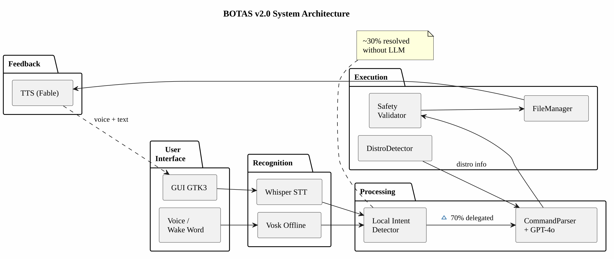
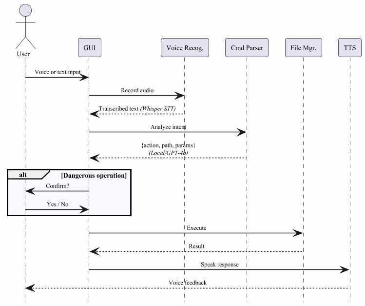
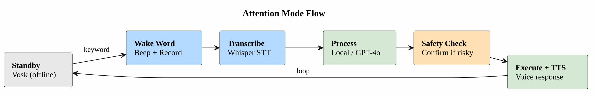
TaskLearner: aprender sin dejar de ser seguro
Cómo aprende
- Tras una llamada exitosa al LLM, deduce una plantilla reutilizable de la petición.
- Localiza qué palabras corresponden a qué parámetro (un nombre de carpeta, un término de búsqueda), ponderando con TF-IDF.
- Al llegar una petición parecida, calcula similitud coseno; por encima de 0.60 reconstruye la misma acción JSON — cero llamadas al LLM.
Salvaguardas y control
- Un patrón que falla dos veces queda en cuarentena: la petición vuelve al LLM.
- Los casi duplicados (>95 % de similitud) solo incrementan un contador; techo de 500 patrones con desalojo del menos usado.
- Solo aprende acciones seguras y plantillables — nunca
clarifynianswer. - Desactivado por defecto. Puedes pausarlo o borrar permanentemente lo aprendido.
- El validador de seguridad corre igual en cada comando reconstruido.
Salida educativa
Cada comando ejecutado vuelve con un resumen en lenguaje llano y, en operaciones marcadas, una evaluación del riesgo — para construir competencia, no dependencia. Todas las interacciones quedan registradas localmente para auditoría.
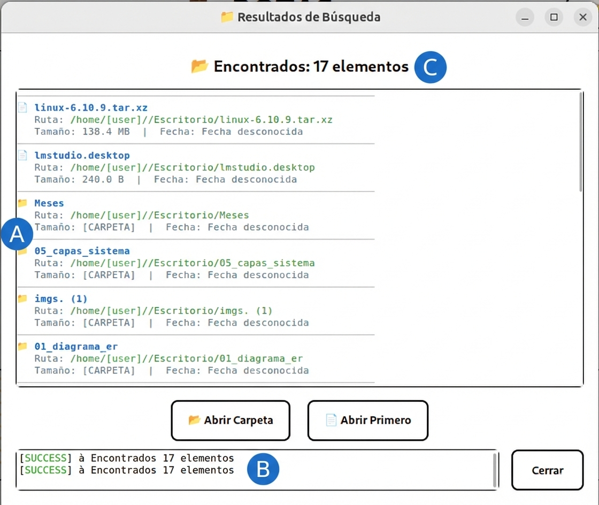
Evaluación automatizada · 250 tareas
Los revisores preguntaron si el 89 % del artículo venía de verificación manual o automatizada. Construimos un arnés reproducible en Perl que pasa el dataset completo por el parser real. Es automatizado, y cualquiera puede repetirlo.
| Categoría (en alcance) | n | Concordancia de acción |
|---|---|---|
| Búsqueda web | 20 | 100 % |
| Apertura de aplicaciones | 10 | 100 % |
| Control de procesos | 5 | 100 % |
| Información del sistema | 17 | 94.1 % |
| Redes | 13 | 92.3 % |
| Permisos | 4 | 75.0 % |
| Gestión de archivos | 38 | 63.2 % |
| Creación de proyectos | 20 | 45.0 % |
| Total | 127 | 78.0 % |
La seguridad aguantó
- 28 operaciones que modifican el estado se materializaron.
- 5/5 operaciones destructivas (
delete) pidieron confirmación. - 0 falsos negativos de seguridad.
- Peligros fuera de alcance (
reboot,pkill) nunca se materializaron.
Nuestro punto más débil
Creación de proyectos: 45 %. El modelo alterna entre emitir una acción
create_project de alto nivel o improvisar carpetas una por una. Es el mismo
problema que hizo fallar la tarea T1 del estudio de usabilidad, y por eso el
planificador de tareas es nuestra prioridad de trabajo futuro.
GPT-4o frente a DeepSeek: autonomía contra cautela
Las mismas 250 tareas, el mismo prompt, dos modelos. La diferencia no es calidad, es temperamento.
| Métrica (en alcance) | DeepSeek | GPT-4o |
|---|---|---|
| Concordancia de acción | 78.0 % | 56.7 % |
Recurre a clarify | 11.0 % | 36.2 % |
| Gestión de archivos | 63.2 % | 18.4 % |
| Permisos | 75.0 % | 0 % |
| Búsqueda web / apps | 100 % | 100 % |
| Falsos negativos de seguridad | 0 | 0 |
Los modelos coinciden en la acción en el 64.8 % (162/250) de las tareas. GPT-4o es sistemáticamente más cauteloso: cuando una ruta es implícita, pide aclaración en vez de asumir. Por eso la elección de modelo no es un número de precisión, sino una palanca de diseño: autonomía (DeepSeek) frente a cautela (GPT-4o). Se elige para tus usuarios.
Estudio de usabilidad · n=14
El estudio piloto del artículo tenía solo 3 participantes, y los revisores lo señalaron. Lo repetimos en serio: 14 participantes novatos en el laboratorio de usabilidad de la UTM (USALAB), bajo consentimiento informado y métricas ISO 9241-11.
Diseño
- Intra-sujeto para la modalidad: cada persona hizo las 3 tareas primero con la interfaz gráfica y luego por voz.
- Entre-sujetos para el modelo: 7 con DeepSeek, 7 con GPT-4o.
- El facilitador dice qué lograr, nunca cómo.
Tareas
- T1 — Crear un árbol de carpetas (6 materias).
- T2 — Encontrar un PDF y moverlo.
- T3 — Hacer una búsqueda web.
Una sesión real
Un fragmento de una sesión del estudio, tal como ocurrió. En el registro de actividad se ve el pipeline completo en texto: grabación, transcripción, comando generado, evaluación de riesgo y ejecución.
Efectividad
Con la interfaz gráfica todos completaron todo: 100 % — esperable, todos saben usar una GUI. Por voz, en un primer contacto sin entrenamiento, BOTAS alcanzó un 83.9 % promedio (T1 80.8 % · T2 78.6 % · T3 92.3 %), mejorando tarea tras tarea. Los fallos se concentraron donde cabía esperar: dictar seis nombres de carpeta de un tirón, o señalar un archivo concreto.
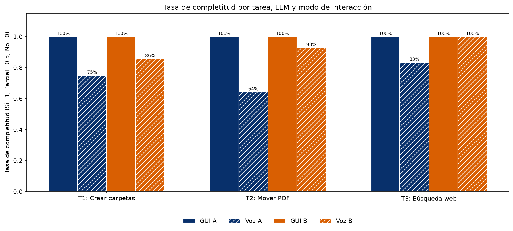
Eficiencia
Aquí está el dato incómodo: la voz fue 2.1–2.5× más lenta que la GUI en el primer contacto — latencia de procesamiento más la curva de aprendizaje de cómo formular una petición. La varianza fue alta: algunos usuarios lo lograron con una instrucción limpia, otros reformularon varias veces. Aun así, la velocidad percibida se quedó en un moderado 3.6/5: no siempre vivieron esos segundos extra como un problema.
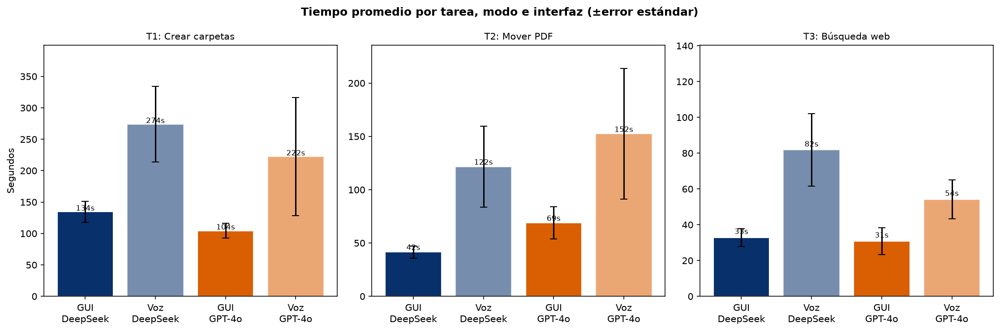
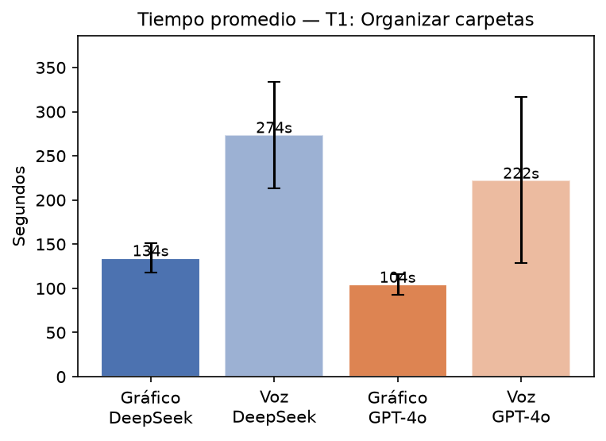
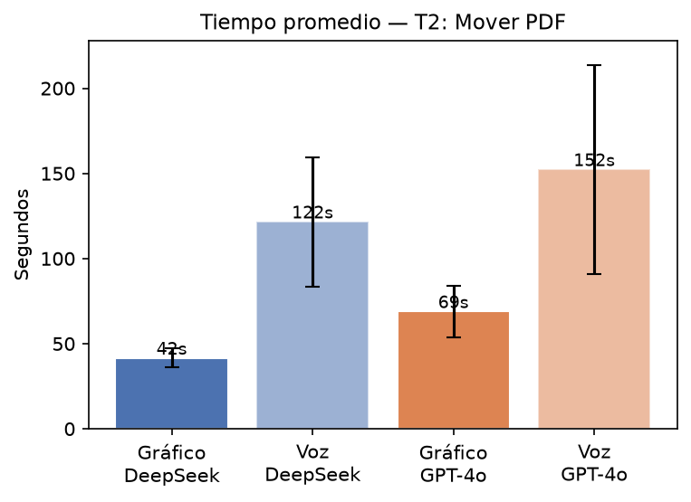
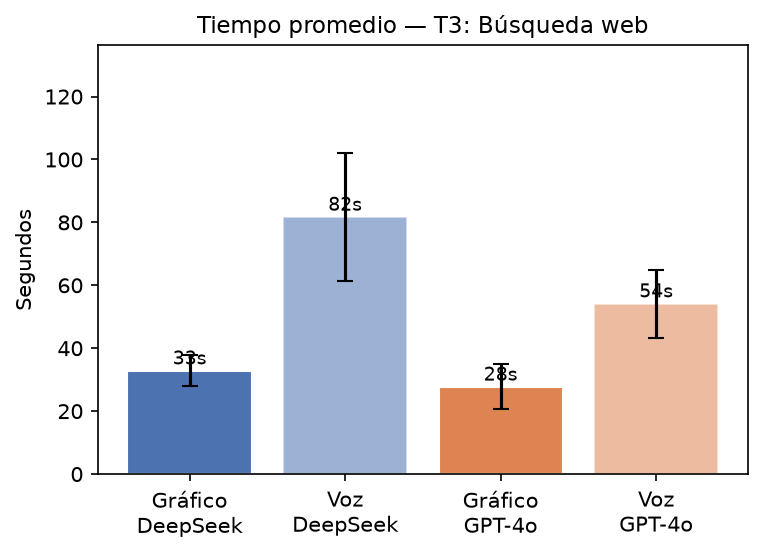
Satisfacción
Y pese a ser más lento y no ser perfecto, la satisfacción fue alta: 8.21/10 general, con facilidad de aprendizaje 4.54/5 (lo mejor valorado) y naturalidad 3.46/5 (lo más débil). El 85 % volvería a usar BOTAS. En la tarea repetitiva T1 la mayoría prefirió la voz aunque fuera más lenta: se valora la automatización desde el primer día. Ese perfil — alta capacidad de aprendizaje, naturalidad rezagada — es lo que la literatura reporta para todos los asistentes de voz, Alexa y Siri incluidos. Es el problema abierto del campo, no solo nuestro.
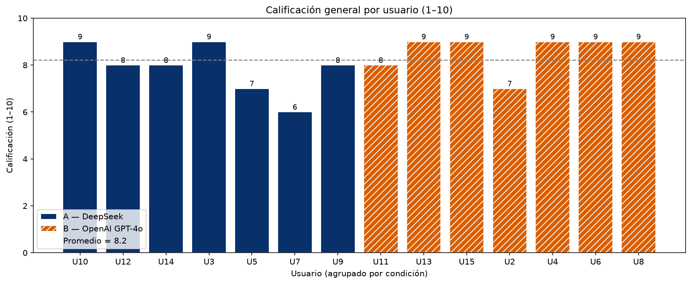
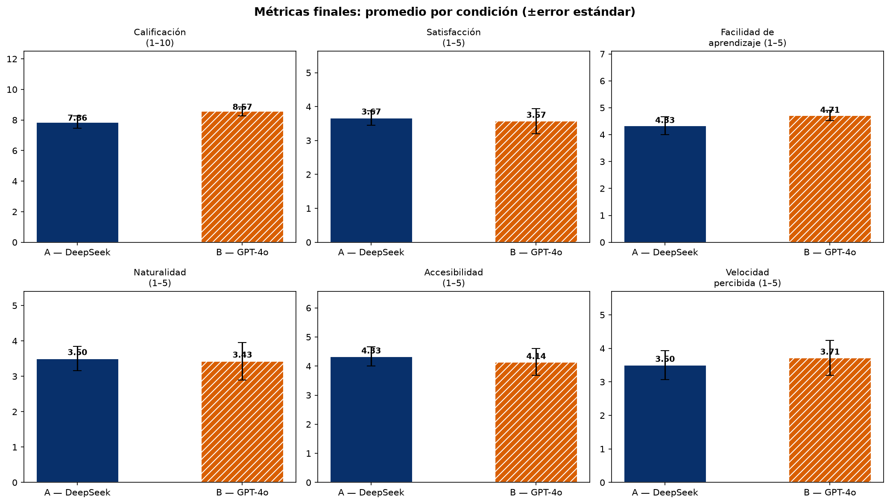
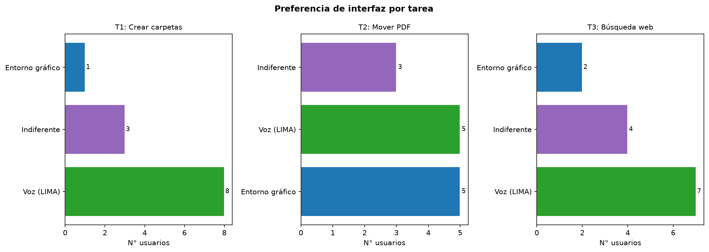
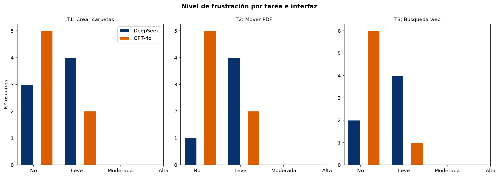
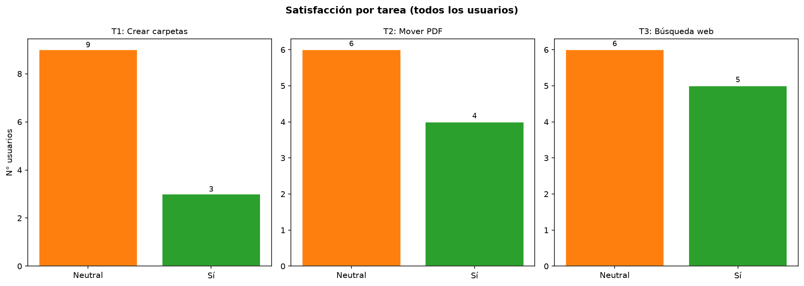
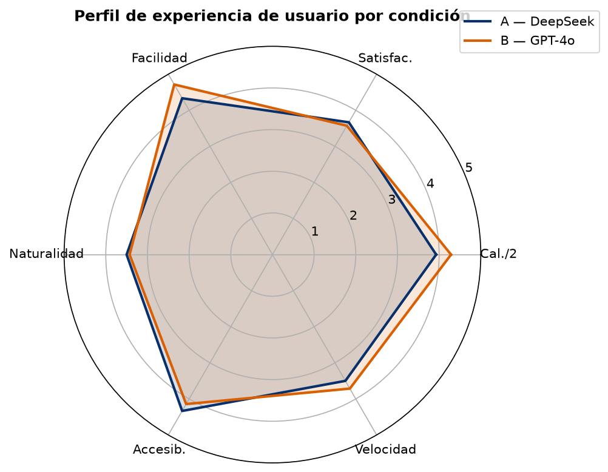
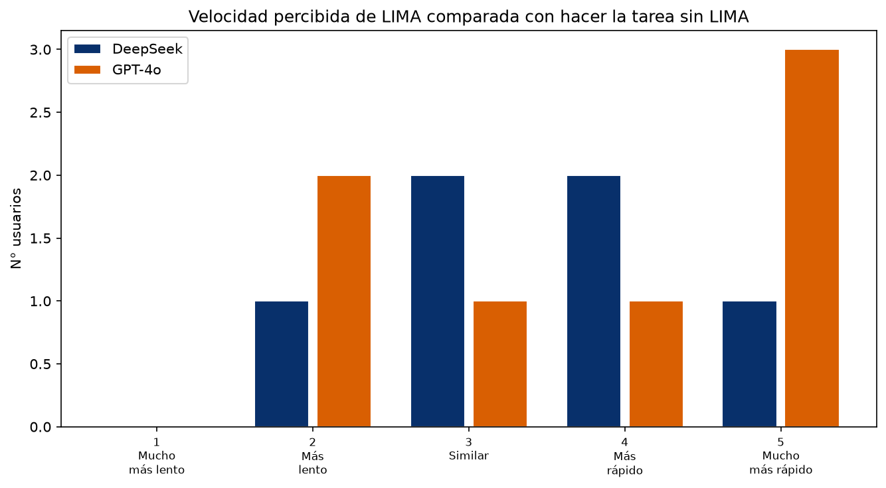
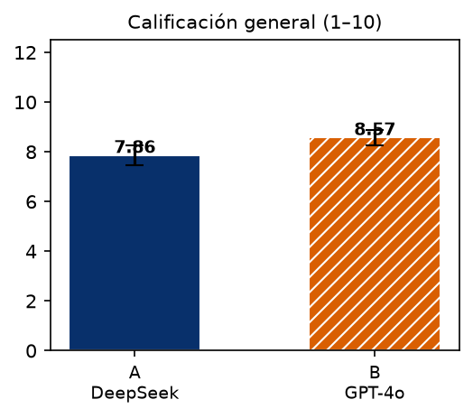
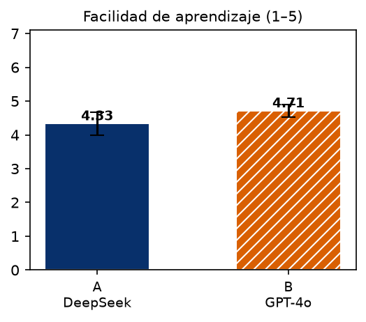
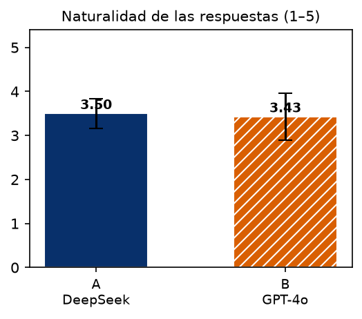
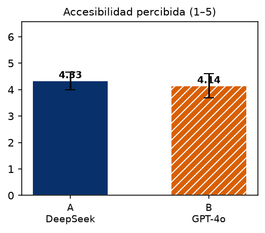
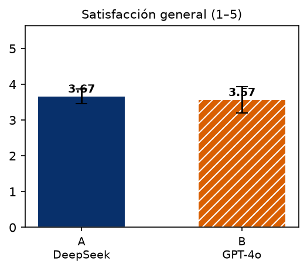
Validación multi-distribución
El artículo declaraba una limitación: aunque BOTAS mapea comandos a seis familias, las pruebas sistemáticas solo se habían hecho en Ubuntu. Corrimos el mismo instalador universal, sin modificar, en máquinas virtuales limpias de tres familias más.
| Familia | Distribución | Instalación | Aplicación | Palabra clave |
|---|---|---|---|---|
| debian | Ubuntu 22.04 (base) | ✓ | ✓ | ✓ |
| debian | Kali (rolling) | ✓ | ✓ | red * |
| fedora | Fedora 44 | ✓ | ✓ | ✓ |
| arch | EndeavourOS / Manjaro | ✓ | ✓ | ✓ |
* En Kali la aplicación quedó plenamente funcional; solo la descarga del modelo offline fue bloqueada por la red de pruebas. En Fedora 44 el instalador corrió totalmente desatendido — traducción de gestor de paquetes, dependencias de Perl y la palabra de activación — con cero pasos manuales. Esto convierte «soporta 6 familias» de una afirmación de diseño en un resultado verificado empíricamente.
Limitaciones honestas
- La voz es más lenta y menos robusta en el primer contacto que una interfaz gráfica.
- El orden fijo de modalidad (GUI primero, luego voz) puede introducir un efecto de arrastre.
- La muestra de 14 participantes es heterogénea y descriptiva, no tiene potencia estadística inferencial.
- La validación multi-distro cubre 4 familias; falta una batería completa de tareas por familia.
- La naturalidad (3.46/5) sigue siendo la dimensión más débil.
- La creación de proyectos (45 %) es la categoría más débil de la evaluación automatizada.
Trabajo futuro
Planificador de tareas
Nuestra propia evaluación señala el problema: pedimos al modelo que resuelva una petición de varias partes en una sola acción JSON. La solución es arquitectónica — planificar primero, ejecutar paso a paso. El plan se muestra antes de ejecutar nada, cada paso pasa por el mismo validador determinista, y si un paso falla BOTAS pregunta y replanifica en lugar de morir a medias dejando un desastre.
Conversación continua
Hoy cada petición es de un solo turno: palabra clave → un comando → reposo. El estudio mostró el costo: quien necesitaba reformular tenía que decir «botas» otra vez. Lo siguiente es un diálogo que sigue abierto hasta que el usuario lo cierre. El punto de diseño clave: la salida siempre es explícita — una despedida hablada o un seguimiento rechazado. El asistente nunca decide por su cuenta seguir escuchando.
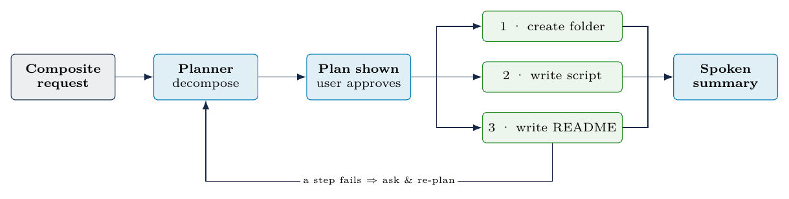
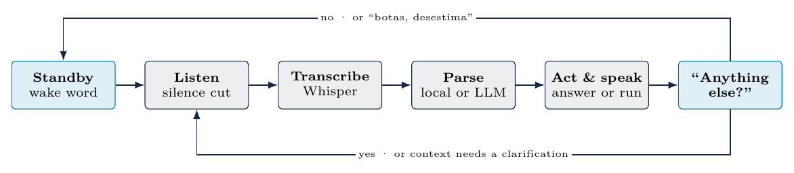
- Modelo local totalmente sin conexión (DeepSeek-R1 destilado).
- Estudio de usabilidad contrabalanceado para eliminar el efecto de arrastre.
- Tutorial de incorporación que enseñe a formular peticiones.
¿Falta algo o quieres discutir la metodología? Escríbeme desde la pestaña Descarga y contacto — leo todo lo que llega.
Descarga y acceso
Versión de demostración · disponible ahora
Instala BOTAS con un solo comando en tu terminal de GNU/Linux:
git clone https://github.com/Hudesde/BOTAS-DEMO.git
cd BOTAS-DEMO
sudo bash install.shAl abrir BOTAS por primera vez te pedirá un código de acceso. Solicítalo gratis en el formulario de abajo: lo recibes al instante.
Solicita tu código y contacto
Déjame tu correo y te asigno un código de acceso para probar BOTAS. ¿Dudas o comentarios? Escríbelos también: leo todo lo que llega por aquí.